Adrian Vale Mara Aircraft Carrier · Lieutenant Commander · Pilot
Agnes Bream Muskrat Fishing Boat · Able Seaman · Deckhand
Alejandra Flint Rabbit Patrol Cutter · Boatswain's Mate 1st Class · Coxswain
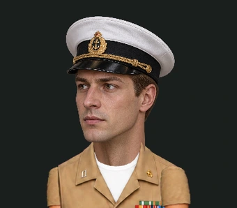
Aleksei Belik Ferret Destroyer · Lieutenant · Pilot

Alexei Rudenko Kodiak Aircraft Carrier · Petty Officer · Communications

Alisa Sokolova Kodiak Aircraft Carrier · Senior Lieutenant · Pilot
Amina Hale Mara Aircraft Carrier · Petty Officer First Class · Sensors

Amos Kettle Beaver Valley Submarine · Culinary Specialist 1st Class · Cook
Anatoly Berezin Kodiak Aircraft Carrier · Captain 1st Rank · Captain
Anika Sethi Launchpad · Chief Engineer · Engineer
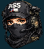
Anika Slate RAT Helicopter 03 · Captain · Pilot
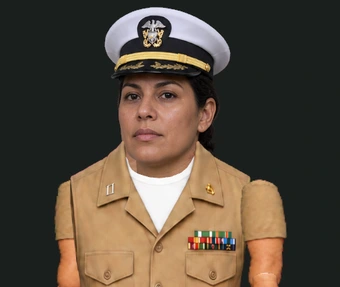
Anita Calder Beaver Valley Submarine · Lieutenant · Engineering
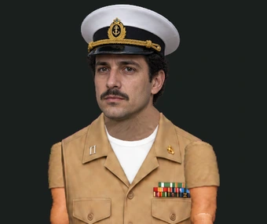
Anton Vedenin Marten Frigate · Captain Lieutenant · Weapons
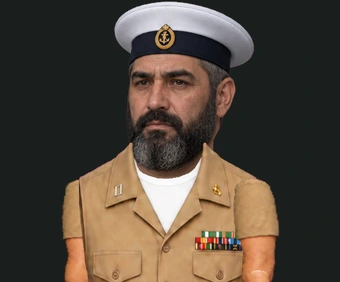
Arsen Makarov Otter Submarine · Senior Petty Officer · Damage control
August Talley Badger Destroyer · Master Chief Boatswain's Mate · Boarding

Bennet Grout Skunk Tanker · Chief Mate · Executive officer
Bertie Nix Capybara Ferry · Purser

Boris Ustin Ferret Destroyer · Lieutenant · Communications
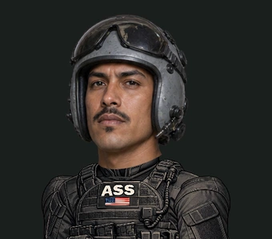
Caleb Rivet Fox Multirole Fighter · Captain · Pilot
Capitan Shaman Weasel Frigate · Captain
Captain Thunder Muskrat Fishing Boat · Master · Captain

Cecil Drains Skunk Tanker · Cargo Surveyor · Cargo inspector
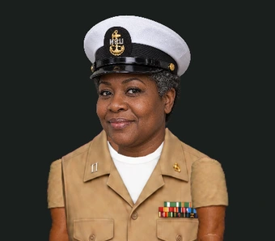
Celeste Brack Badger Destroyer · Chief Culinary Specialist · Cook
Celia Lin Launchpad · Navigation and Communications Officer · Communications

Chief Engineer Grubb Weasel Frigate · Lieutenant · Engineering

Chief Lowe Weasel Frigate · Chief Sonar Technician · Sonar

Commander Blackwood Weasel Frigate · Commander · Executive officer
Cook Marinara Weasel Frigate · Culinary Specialist Second Class · Cook

Curtis Bell Mara Aircraft Carrier · Senior Chief Petty Officer · Damage control

Dana Whitlock Mara Aircraft Carrier · Lieutenant · Pilot

Daniil Krylov Otter Submarine · Captain 3rd Rank · Executive officer

Dax Mercer Capybara Ferry · A.S.S. Agent · Security
Della Sludge Skunk Tanker · Master · Captain

Denis Kopylov Ferret Destroyer · Senior Seaman · Helm

Devon Coyle Badger Destroyer · Quartermaster Second Class · Helm
Dina Ozerova Kodiak Aircraft Carrier · Senior Petty Officer · Sensors
Dmitri Korsun Kodiak Aircraft Carrier · Captain Lieutenant · Pilot

Duncan Skein Shrew RHIB · Chief Boatswain's Mate · Captain

Eddie Sprocket Muskrat Fishing Boat · Chief Engineer · Engineering

Elena Reyes Mara Aircraft Carrier · Lieutenant · Pilot

Eli Granger Ox Class Heavy Lift Ship · Chief Mate / Submersible Pilot · Chief mate

Elias Merrick Launchpad · Chief Mate · Chief mate

Ellis Varden Badger Destroyer · Lieutenant Commander · Executive officer
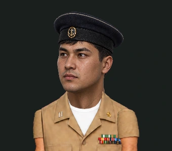
Emil Sabitov Marten Frigate · Senior Seaman · Helm
Evelyn Sparks Porcupine Experimental Fighter · Lieutenant · Pilot
Everett Sloane Mara Aircraft Carrier · Commander · Executive officer

Farid Yusupov Ferret Destroyer · Engineer-Captain Lieutenant · Engineering
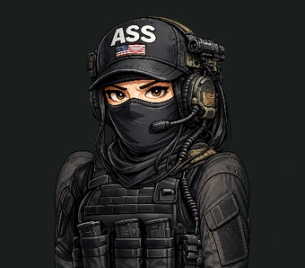
Felicia Rook RAT Helicopter 01 · Captain · Pilot

Felix Arden Mara Aircraft Carrier · Lieutenant · Medic
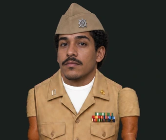
Felix Brine Beaver Valley Submarine · Quartermaster 2nd Class · Helm
Galina Volkova Kodiak Aircraft Carrier · Warrant Officer · Damage control

Galina Zhar Ferret Destroyer · Petty Officer · Cook
Grigori Surov Otter Submarine · Captain 2nd Rank · Captain

Gunner Thorne Weasel Frigate · Gunner's Mate First Class · Gunner

Gus Larder Skunk Tanker · Chief Engineer · Engineering
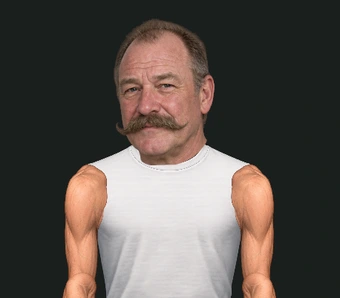
Harlan Docket Capybara Ferry · Master · Captain
Hector Nail RAT Helicopter 02 · Captain · Pilot

Helena Ward Mara Aircraft Carrier · Captain

Helmsman Tiller Weasel Frigate · Boatswain's Mate Second Class · Helm

Igor Rybak Mink Assault RHIB · Sergeant · Boarding

Ilya Kedrov Marten Frigate · Senior Warrant Officer · Sonar
Ilya Yermakov Ferret Destroyer · Captain 2nd Rank · Captain

Imani Quill Capybara Ferry · Able Seaman · Deckhand
Inez Serrano Badger Destroyer · Lieutenant Junior Grade · Communications
Irina Lazutina Kodiak Aircraft Carrier · Senior Lieutenant · Pilot
Isaac Keene Mara Aircraft Carrier · Lieutenant Junior Grade · Pilot
Jonah Silt Beaver Valley Submarine · Lieutenant · Weapons
Jonas Quill Ox Class Heavy Lift Ship · Able Seaman / Steward · Deckhand
Julian Seo Badger Destroyer · Lieutenant · Pilot

June Sallow Skunk Tanker · Medical Officer · Medic

Keisha Volts RAT Fast Interceptor · Staff Sergeant · Sensors

Kirill Kabanov Marten Frigate · Petty Officer 1st Class · Gunner
Konstantin Rakitin Marten Frigate · Captain 2nd Rank · Captain

Ksenia Sorokina Kodiak Aircraft Carrier · Medical Lieutenant · Medic

Lenora Pike Beaver Valley Submarine · Commander · Captain
Leonid Krutov Ferret Destroyer · Senior Warrant Officer · Sonar
Lev Safronov Otter Submarine · Lieutenant · Communications

Lillian Morse Mara Aircraft Carrier · Petty Officer Second Class · Communications

Lt. Cmdr. Marsh Weasel Frigate · Lieutenant Commander · Weapons

Lt. Delgado Weasel Frigate · Lieutenant · Pilot

Maksim Tikhin Otter Submarine · Senior Warrant Officer · Sonar

Mara Vale Ox Class Heavy Lift Ship · Master · Captain
Maren Tsai Badger Destroyer · Chief Sonar Technician · Sonar

Mason Grit Rabbit Patrol Cutter · Lieutenant · Engineering

Master Chief Kessler Weasel Frigate · Master Chief · Boarding

Mateo Finch Mara Aircraft Carrier · Petty Officer Second Class · Helm

Mei Fen Skunk Tanker · Second Mate · Helm

Micah Boone Beaver Valley Submarine · Chief Torpedoman · Torpedo

Mikhail Skobelev Marten Frigate · Captain 3rd Rank · Executive officer
Mikhail Zorin Kodiak Aircraft Carrier · Petty Officer · Helm
Nadine Strake Badger Destroyer · Commander · Captain

Naomi Brooks Mara Aircraft Carrier · Lieutenant · Pilot

Naomi Ishikawa Launchpad · Ship Medic · Medic
Natalya Kaverina Kodiak Aircraft Carrier · Senior Warrant Officer · Engineer
Ned Tallow Skunk Tanker · Cook
Nikita Belov Otter Submarine · Medical Lieutenant · Medic

Nikolai Voronin Wolverine Fighter · Captain · Pilot
Nola Dent Beaver Valley Submarine · Chief Sonar Technician · Sonar
Nolan Cask Beaver Valley Air · Staff Sergeant · Boarding

Oleg Rudin Ferret Destroyer · Captain Lieutenant · Weapons

Oleg Shustov Mink Assault RHIB · Senior Lieutenant · Captain
Owen Rusk Beaver Valley Submarine · Lieutenant Commander · Executive officer
Pavel Gromov Otter Submarine · Captain Lieutenant · Weapons
Pavel Morozov Kodiak Aircraft Carrier · Senior Petty Officer · Cook

Petra Vane Capybara Ferry · A.S.S. Agent · Security

Priya Batra Beaver Valley Submarine · Lieutenant Junior Grade · Communications

Pyotr Demidov Marten Frigate · Lieutenant · Pilot

Quentin Mire RAT Helicopter 04 · Captain · Pilot
Rafael Costa Launchpad · Bosun · Damage control

Ramil Ganiev Stoat Patrol Cutter · Petty Officer · Coxswain
Renee Cross Shrew RHIB · Petty Officer 2nd Class · Boarding

Reuben Dacre Badger Destroyer · Chief Damage Controlman · Damage control
Rochelle Vane Rabbit Patrol Cutter · Lieutenant Commander · Captain

Roman Vetrov Kodiak Aircraft Carrier · Captain Lieutenant · Weapons
Rosa Carden Mara Aircraft Carrier · Petty Officer First Class · Cook

Rowan Mott Beaver Valley Submarine · Hospital Corpsman 1st Class · Medic
Ruslan Saveliev Ferret Destroyer · Medical Lieutenant · Medic

Saira Nwosu Ox Class Heavy Lift Ship · Chief Engineer · Engineering
Samira Nassar Badger Destroyer · Lieutenant · Weapons
Seaman Timmy Puddle · Weasel Frigate · Damage-control runner

Sergei Malinin Kodiak Aircraft Carrier · Captain Lieutenant · Pilot
Sergei Tsepov Stoat Patrol Cutter · Captain 2nd Rank · Captain

Shane Beaver Valley Air · Captain

Silas Okafor Badger Destroyer · Lieutenant · Engineering

Sonia Vale Capybara Ferry · Chief Engineer · Engineering

Stanislav Zubov Otter Submarine · Engineer-Captain Lieutenant · Engineering
Stepan Krivets Ferret Destroyer · Petty Officer 1st Class · Gunner

Tamara Chugun Marten Frigate · Petty Officer · Cook
Tess Calder Mara Aircraft Carrier · Chief Petty Officer · Engineer
Tessa Rook Beaver Valley Submarine · Damage Controlman 3rd Class · Damage control

Timur Ibragimov Otter Submarine · Senior Seaman · Helm

Tobin Crimp RAT Fast Interceptor · Lieutenant Commander · Captain

Tomas Bock Skunk Tanker · Able Seaman · Deckhand

Vadim Osipov Marten Frigate · Medical Lieutenant · Medic
Vasili Kustov Otter Submarine · Senior Warrant Officer · Torpedo
Vera Bellweather Beaver Valley Air · Flight Attendant · Attendant
Viktor Panin Ferret Destroyer · Captain 3rd Rank · Executive officer
Viktor Rybakov Kodiak Aircraft Carrier · Senior Lieutenant · Pilot
Walter Blythe Launchpad · Chef and Chief Steward · Cook

Wesley Knox Mara Aircraft Carrier · Lieutenant Commander · Weapons
Yan Khromov Stoat Patrol Cutter · Engineer-Captain Lieutenant · Engineering
Yasmin Kerr Skunk Tanker · Pump Chief · Pump chief
Yegor Dudkin Otter Submarine · Petty Officer · Cook

Yelena Orlova Kodiak Aircraft Carrier · Captain 2nd Rank · Executive officer

Yuri Taranov Marten Frigate · Engineer-Captain Lieutenant · Engineering
Zoya Lazareva Marten Frigate · Lieutenant · Communications
Zuck Launchpad · Yacht Owner · Owner